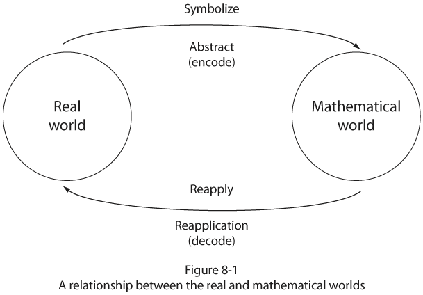
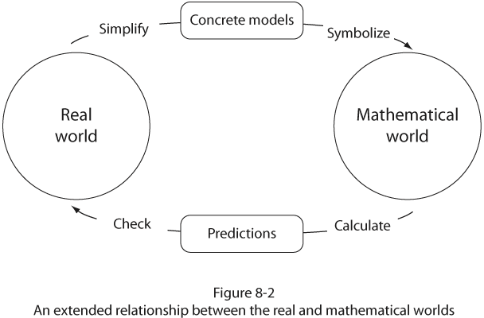
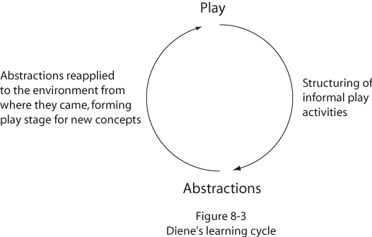

|
||||||||||||||||||||||||||||||||||||||||
|
8.
The Role of Manipulative
Materials in the Learning of Mathematical Concepts |
||||||||||||||||||||||||||||||||||||||||
|
Thomas R. Post |
||||||||||||||||||||||||||||||||||||||||
|
It should not be surprising
that current research has established a substantial relationship between
the use of manipulative materials and students' achievement in the mathematics
classroom. Learning theorists have suggested for some time that children's'
concepts evolve through direct interaction with the environment, and materials
provide a vehicle through which this can happen. This message has been
conveyed in a number of ways: Piaget (1971) suggested that concepts are
formed by children through a reconstruction of reality, not through an
imitation of it; Dewey (1938) argued for the provision of Researchers in mathematics education are in the process of accumulating a persuasive body of evidence that supports the use of manipulative materials in the mathematics classroom. In view of this, it is perplexing that relatively few programs incorporate a substantive experimental component while so many others concentrate merely on completing the pages in the ubiquitous commercially produced textbooks and workbooks. This chapter will discuss the theoretical rationale for using manipulative materials in the classroom, provide a summary of what is already known about the impact of manipulative materials on mathematics learning, discuss barriers to their use, and suggest directions for their use in future research. THE NATURE OF THE PROBLEM OF LEARNING MATHEMATICS
Mathematics in its
purest sense is an abstraction. Whether it was discovered by or has been
created by mankind is perhaps a philosophical point and need not concern
us here; but the fact is that it exists, and it is extremely useful in
describing and predicting events in the world around us. How then is it
so useful if it exists "independent of us personally and of the world
outside?" The answer lies in the ability of mathematics to model
effectively numerous aspects of the real world. It does this by creating
abstract structures that have properties or attributes similar to its
real-world counterpart. If the model behaves in a manner that truly parallels
the original, then it becomes possible to Lesh (1979) has suggested
that manipulative materials can be effectively used as an intermediary
between the real world and the mathematical world. He contends that such
use would tend to promote problem-solving ability by providing a vehicle
through which children can model real-world situations. The use of manipulative
materials (concrete models) in this manner is thought to be more abstract
than the actual situation yet less abstract than the formal symbols. Figure
8-2 illustrates the revised model. It should be noted that this expanded
use departs from the more traditional classroom technique wherein manipulatives
have been used to teach children how to calculate using the four arithmetic
operations.   Relying on the model depicted in Figure 8-2, we find it possible to determine the total number of milk containers needed by the three first-grade classes in Main Elementary School by adding the numbers twenty-four, twenty-seven, and twenty-five. It is not necessary to pair each child with a milk container in order to find the correct total because the abstract system of addition is structurally similar to the problem in question and therefore can be used as a model for it. More important, this abstract system is structurally similar to all physical situations where a sum corresponding to the union of a number of disjoint sets is required. It now becomes possible to utilize this more abstract and admittedly less cumbersome system to make conclusions about the more concrete and awkward system. Recall that the problem originated in the real world and was concerned with identifying a one-to-one correspondence between the number of individuals and a like number of milk containers. The problem was then changed into a more suitable, though admittedly more abstract, format; and from a practical standpoint, a considerably more manageable format. It is important to note that this transformation of the problem situation preserved all the important structural aspects of that situation. To complete the problem, the numbers are added, a sum is generated, and conclusions are related to the real-world situation at Main Elementary School. We have come full cycle (see Figure 8-2). The structural similarity between these two systems is known as an isomorphism. It is an extremely important concept in mathematics, for if any two systems can be shown to be isomorphic to one another, it becomes possible to work in the simpler and more available system and transfer all conclusions to the less accessible one. In reality, complete isomorphisms are never really established between an abstract concept and a set of physical materials or a real-world situation. The extent to which the partial isomorphism approximates the concept is the extent to which the more accessible structure is useful in teaching the concept. The fact that some sets of manipulative materials are better than others for teaching a particular concept attests to this. Number is an abstraction. No one has ever seen a number and no one ever will. "Two ness" is an idea. We see illustrations of this idea everywhere, but we do not see the idea itself. In a similar way the symbol "2" is used to elicit a whole series of recollections and experiences that we have had entailing the concept of two, but the squiggly line 2 in and of itself is not the concept. How then do we teach
children about the concept of number if as indicated it is a total abstraction?
The answer is very much related to the concept of an isomorphism. For
if a parallel structure that was more accessible and perhaps manipulable
could be identified having the same properties as the set of whole numbers,
then it would be possible to operate within this more accessible (and
isomorphic) structure and subsequently to make conclusions about the more
abstract system of number. This is precisely what happens. Sometimes these
artificially constructed systems are called interpretations or embodiments
of a concept. Some examples of these partial isomorphisms are using counters
or sets of objects to represent the counting numbers SEVERAL THEORETICAL PERSPECTIVES The major theoretical rationale for the use of manipulative materials in a laboratory-type setting has been attributed to the works of Piaget, Bruner, and Dienes. Each represents the cognitive viewpoint of learning, a position that differs substantially from the connectionist theories that were predominant in educational psychology during the first part of the twentieth century. Modern cognitive psychology places great emphasis on the process dimension of the learning process and is at least as concerned with "how" children learn as with "what", it is they learn. The objective of true understanding is given highest priority in the teaching/learning process, and it is generally felt that such understanding can only follow the individuals' personalized perception, synthesis, and assimilation of relationships as these are encountered in real situations. Emphasis is placed, therefore, on the interrelationships between parts as well as the relationship between parts and whole. Each of these men subscribes to a basic tenet of Gestalt psychology, namely that the whole is greater than the sum of its parts. Each suggests that the learning of large conceptual structures is more important than the mastery of large collections of isolated bits of information. Learning is thought to be intrinsic and, therefore, intensely personal in nature. It is the meaning that each individual attaches to an experience which is important. It is generally felt that the degree of meaning is maximized when individuals are allowed and encouraged to interact personally with various aspects of their environment. This, of course, includes other people. I t is the physical action on the part of the child that contributes to her or his understanding of the ideas encountered. Proper use of manipulative materials could be used to promote the broad goals alluded to above. I will discuss each of these men more fully since each has made distinct contributions to a coherent rationale for the use of manipulative materials in the learning of mathematical concepts. Jean Piaget Piaget's contributions to the psychology of intelligence have often been compared to Freud's contributions to the psychology of human personality. Piaget has provided numerous insights into the development of human intelligence, ranging from the random responses of the young infant to the highly complex mental operations inherent in adult abstract reasoning. He has established the framework within which a vast amount of research has been conducted, particularly within the past two decades. In his book The Psychology of Intelligence (1971), Piaget formally develops the stages of intellectual development and the way they are related to the development of cognitive structures. His theory of intellectual development views intelligence as an evolving phenomenon occurring in identifiable stages having a constant order. The age at which children attain and progress through these stages is variable and depends on factors such as physiological maturation, the degree of meaningful social or educational transmission, and the nature and degree of relevant intellectual and psychological experiences. Piaget regards intelligence as effective adaptation to one's environment. The evolution of intelligence involves the continuous organization and reorganization of one's perceptions of, and reactions to, the world around him. This involves the complementary processes of assimilation (fitting new situations into existing psychological frameworks) and accommodation (modification of behavior by developing or evolving new cognitive structures). The effective use of the assimilation-accommodation cycle continually restores equilibrium to an individual's cognitive framework. Thus the development of intelligence is viewed by Piaget as a dynamic, nonstatic evolution of newer and more complex mental structures. Piaget's now-famous four stages of intellectual development (sensorimotor, preoperational, concrete operations, and formal operations) are useful to educators because they emphasize the fact that children's modes of thought, language, and action differ both in quantity and quality from that of the adult. Piaget has argued persuasively that children are not little adults and therefore cannot be treated as such. "Perhaps the most important single proposition that the educator can derive from Piaget's work, and its use in the classroom, is that children, especially young ones, learn best from concrete activities" (Ginsberg and Opper 1969, p. 221). This proposition, if followed to its logical conclusion, would substantially alter the role of the teacher from expositor to one of facilitator, that is, one who promotes and guides children's manipulation of and interaction with various aspects of their environment. While it is true that when children reach adolescence their need for concrete experiences is somewhat reduced because of the evolution of new and more sophisticated intellectual schemas, it is not true that this dependence is eliminated. The kinds of thought processes so characteristic of the stage of concrete operations are in fact utilized at all developmental levels beyond the ages of seven or eight. Piaget's crucial point, which is sometimes forgotten or overlooked, is that until about the age of eleven or twelve, concrete operations represent the highest level at which the child can effectively and consistently operate. Piaget has emphasized the important role that social interaction plays in both the rate and quality with which intelligence develops. The opportunity to exchange, discuss, and evaluate one's own ideas and the ideas of others encourages decentration (the diminution of egocentricity), thereby leading to a more critical and realistic view of self and others. I t would be impossible
to incorporate the essence of these ideas into a mathematics program that
relies primarily (or exclusively) on the printed page for its direction
and "activities." To be sure, Piaget speaks to much more than
the learning of mathematics per se. Intellectual development is inextricably
intertwined with the social/psychological It is generally felt that the basic components of a theoretical justification for the provision of active learning experiences in the mathematics classroom are embedded in Piaget's theory of cognitive development. Dienes and Bruner, while generally espousing the views of Piaget, have made contributions to the cognitive view of mathematics learning that are distinctly their own. The work of these two men lends additional support to this point of view. Zoltan P. Dienes Unlike Piaget, Dienes has concerned himself exclusively with mathematics learning; yet like Piaget, his major message is concerned with providing a justification for active student involvement in the learning process. Such involvement routinely involves the use of a vast amount of concrete material. Rejecting the position that mathematics is to be learned primarily for utilitarian or materialistic reasons, Dienes (1969) sees mathematics as an art form to be studied for the intrinsic value of the subject itself. He believes that learning mathematics should ultimately be integrated into one's personality and thereby become a means of genuine personal fulfillment. Dienes has expressed concern with many aspects of the status quo, including the restricted nature of mathematical content considered, the narrow focus of program objectives, the overuse of large-group instruction, the debilitating nature of the punishment- reward system (grading), and the limited dimension of tile instructional methodology used in most classrooms. Dienes's theory of mathematics learning has four basic components or principles. Each will be discussed briefly and its implications noted. (The reader will notice large-scale similarities to the work of Piaget.) The Dynamic Principle. This principle suggests that true understanding of a new concept is an evolutionary process involving the learner in three temporally ordered stages. The first stage is the preliminary or play stage, and it involves the learner with the concept in a relatively unstructured but not random manner. For example, when children are exposed to a new type of manipulative material, they characteristically 'play' with their newfound 'toy.' Dienes suggests that such informal activity is a natural and important part of the learning process and should therefore be provided for by the classroom teacher. Following the informal exposure afforded by the play stage, more structured activities are appropriate, and this is the second stage. It is here that the child is given experiences that are structurally similar (isomorphic) to the concepts to be learned. The third stage is characterized by the emergence of the mathematical concept with ample provision for reapplication to the real world. This cyclical pattern can be depicted as shown in Figure 8-3. The completion of this cycle is necessary before any mathematical concept becomes operational for the learner. In subsequent work Dienes elaborated upon this process and referred to it as a learning cycle (Dienes 1971, Dienes and Golding 1971). The dynamic principle establishes a general framework within which learning of mathematics can occur. The remaining components should be considered as existing within this framework. The Perceptual Variability Principle. This principle suggests that conceptual learning is maximized when children are exposed to a concept through a variety of physical contexts or embodiments. The experiences provided should differ in outward appearance while retaining the same basic conceptual structure. The provision of multiple experiences (not the same experience many times), using a variety of materials, is designed to promote abstraction of the mathematical concept. When a child is given opportunities to see a concept in different ways and under different conditions, he or she is more likely to perceive that concept irrespective of its concrete embodiment. For example, the regrouping procedures used in the process of adding two numbers is independent of the type of materials used. We could therefore use tongue depressors, chips, and abacus or multibase arithmetic blocks to illustrate this process. When exposed to a number of seemingly different tasks that are identical in structure, children will tend to abstract the similar elements from their experiences. It is not the performance of anyone of the individual tasks that is the mathematical abstraction but the ultimate realization of their similarity.  The Mathematical Variability Principle. This principle suggests that the generalization of a mathematical concept is enhanced when the concept is perceived under conditions wherein variables irrelevant to that concept are systematically varied while keeping the relevant variables constant. For example, if one is interested in promoting an understanding of the parallelogram, this principle suggests that it is desirable to vary as many of the irrelevant attributes as possible. In this example, the size of angles, the length of sides, the position on the paper should be varied while keeping the relevant attribute-opposite sides parallel-intact. Dienes suggests that the two variability principles be used in concert with one another since they are designed to promote the complementary processes of abstraction and generalization, both of which are crucial aspects of conceptual development. The Constructivity Principle. Dienes identifies two kinds of thinkers: the constructive thinker and the analytic thinker. He roughly equates the constructive thinker with Piaget's concrete operational stage and the analytical thinker with Piaget's formal operational stage of cognitive development. This principle states simply that "construction should always precede analysis." It is analogous to the assertion that children should be allowed to develop their concepts in a global intuitive manner emanating from their own experiences. According to Dienes, these experiences carefully selected by the teacher form the cornerstone upon which all mathematics learning is based. At some future time, attention will be directed toward the analysis of what has been constructed; however, Dienes points out that it is not possible to analyze what is not yet there in some concrete form. Summary and Implications. The unifying theme of these four principles is undoubtedly that of stressing the importance of learning mathematics by means of direct interaction with the environment. Dienes is continually implying that mathematics learning is not a spectator sport and, as such, requires a very active type of physical and mental involvement on the part of the learner. In addition to stressing the environmental role in effective conceptual learning, Dienes addresses, in his two variability principles, the problem of providing for individualized learning rates and learning styles. His constructivity principle aligns itself closely with the work of Piaget and suggests a developmental approach to the learning of mathematics that is temporally ordered to coincide with the various stages of intellectual development. The following are some implications of Dienes's work.
Jerome Bruner Greatly influenced by the work of Piaget and having worked for some time with Dienes at Harvard, Bruner shares many of their views. Interested in the general nature of cognition (conceptual development), he has provided additional evidence suggesting the need for firsthand student interaction with the environment. His widely quoted (and hotly debated) view that "any subject can be taught effectively in some intellectually honest form to any child at any stage of development" (Bruner 1966, p. 33) has encouraged curriculum developers in some disciplines (especially social studies) to explore new avenues of both content and method. In recent years Bruner has become widely known in the field of curriculum development through his controversial elementary social studies program, Man: A Course of Study (1969). Bruner's instructional model is based on four key concepts: structure, readiness, intuition, and motivation. These constructs are developed in detail in his classic book, The Process of Education (1960). Bruner suggests that teaching students the structure of a discipline as they study particular content leads to greater active involvement on their part as they discover basic principles for themselves. This, of course, is very different from the learning model that suggests students be receivers rather than developers of information. Bruner states that learning the structure of knowledge facilitates comprehension, memory, and transfer of learning. The idea of structure in learning leads naturally to the process approach where the very process of learning (or how one learns) becomes as important as the content of learning (or what one learns). This position, misunderstood by many, has been the focus of considerable controversy. The important thing to remember is that Bruner never says that content is unimportant. Bruner (1966) suggests three modes of representational thought. That is, an individual can think about a particular idea or concept at three different levels. "Enactive" learning involves hands-on or direct experience. The strength of enactive learning is its sense of immediacy. The mode of learning Bruner terms "iconic" is one based on the use of the visual medium: films, pictures, and the like. "Symbolic" learning is that stage where one uses abstract symbols to represent reality. Bruner feels that a key to readiness for learning is intellectual development, or how a child views the world. Here he refers to the work of Piaget, stating that "what is most important for teaching basic concepts is that the child be helped to pass progressively from concrete thinking to the utilization of more conceptually adequate modes of thought" (Bruner 1960, p. 38). Bruner suggests that readiness depends more upon an effective mix of these three learning modes than upon waiting until some imagined time when children are capable of learning certain ideas. Throughout his writing is the notion that the key to readiness is a rich and meaningful learning environment coupled with an exciting teacher who involves children in learning as a process that creates its own excitement. Bruner clings to the idea of intrinsic motivation learning as its own reward. It is a refreshing thought. In short, a general overhaul of existing pedagogical practices, teacher-pupil interaction patterns, mathematical content, and mode of presentation, as well as general aspects of classroom climate would be called for if the views of Piaget, Dienes, and Bruner were to be taken seriously. Each in his own way would promote a revolution in school curricula, one whose major focus would be method as well as content. CURRENT RESEARCH ON USE OF MANIPULATIVES Research dealing with the impact of activity-based approaches on the teaching and learning of mathematics is relatively extensive. No less than twenty reviews of research, surveys of the state of the art, or historical overviews have been completed since 1957. Given the sheer number of studies undertaken, it is perplexing to note that more is not known about the precise way in which manipulative materials affect the development of mathematical concepts. Perhaps the largest contributing factor to this has been the lack of coordinated research efforts that have mapped out a priori an area or areas of investigation and have designed individual investigations that would have provided coordinated answers to sets of related questions. Rather, the past pattern of research has been that of large numbers of individually conducted investigations and then posteriori attempts to relate them in some fashion. This has not been particularly fruitful and has left many unanswered questions and huge gaps in our knowledge. The most recent and comprehensive review of research on the use of manipulative materials was compiled at the Mathematics and Science Information Reference Center at Ohio State University (ERIC) by Suydam and Higgins (1976). The report generally concludes that manipulatives are effective in promoting student achievement but emphasizes the need for additional research. The impact of the use of manipulative materials upon achievement in mathematics is summarized in Table 8-1 (Suydam and Higgins 1976, pp. 33-39). The reader will note
from Table 8-1 that 60 percent of the research studies examined favored
the manipulative treatments, while only 10 percent clearly favored the
nonmanipulative treatment. If studies in which no significant differences
were found are interpreted as efforts that did not inhibit achievement,
then in 90 percent of the studies reviewed the use of manipulative materials
produced equivalent or superior student performance when compared with
nonmanipulative approaches. This has led Suydam and Higgins to conclude
that
The results summarized in the Suydam and Higgins report are similar in nature to those found in earlier reviews of research dealing with manipulative materials and/or mathematics laboratories (Fennema 1972, Fitzgerald 1972, Kieren 1969, 1971, Vance and Kieren 1971, Wilkinson 1974). It was observed that "In almost all cases there is a similarity between their conclusions and certain of ours" (Suydam and Higgins 1976, p. 85). In conclusion Suydam and Higgins state, "We believe that lessons involving manipulative materials will produce greater mathematical achievement than will lessons in which manipulative materials are not used if the manipulative materials are used well" (p. 92). What does it mean to use materials well? The following suggestions were made by Suydam and Higgins (1976, pp. 92-94):
Other aspects of manipulative materials need to be considered and researched. Bruner's three modes of representational thought suggest a linear sequence for advancing a particular concept from the concrete to the abstract level: first enactive, then iconic, then symbolic. Since manipulative materials are a means to an end and not an end in themselves, the intellectual mechanisms used in the transition from one mode to another are of great interest to the researcher and of equal significance to the classroom teacher. At this time, the general nature of those mechanisms is not known. I t is known, however, that experience and understanding at one level do not necessarily imply the ability to function at a more sophisticated level. For this reason the translation processes both within modes (multiple embodiments) and between modes need conscious attention. Under normal conditions, children are given materials during an instructional sequence wherein concepts are introduced and developed. In general, insufficient attention is paid to the way in which this enactive experience is related to the symbolic representation of that experience; for example, children might manipulate blocks, an abacus, or tongue depressors during initial exposure to the concept of place value. They may, however, never receive instruction as to how these materials reflect, in a concrete manner, the abstract manipulation of symbols that is sure to follow the enactive experience; that is, the existing isomorphism between different modes of representation of an idea is never consciously established. When children are then evaluated to assess their levels of achievement, they are expected to perform not at the enactive level, wherein the concept has been introduced and developed, but at the symbolic level. This inconsistency between mode of instruction and mode of evaluation has no doubt resulted in many spurious (and probably negative) conclusions regarding the nature of the impact of manipulative materials upon conceptual development. One way in which the relationships between enactive and symbolic modes can be highlighted is to juxtapose them, gradually fading out the more concrete mode. That is:
This model suggests that a concept should be introduced enactively, with the initial emphasis solely on physical manipulation (E). Next, although the primary emphasis is still on physical manipulation, the child is asked to simply record the results of his activity (ES). Third, the child is asked to perform the manipulation symbolically and to check or reaffirm symbolic results by reenacting or modeling the original problem or exercise using the manipulative material, (SE). Last, the materials are faded out altogether, and the child operates exclusively at the symbolic level (S). Success within this last phase would seem to be logically dependent upon previous experiences within the other three. Note that the iconic phase is not represented. It is, at present, unclear how to best utilize this mode in the instructional sequence, and yet it would seem to be a valuable adjunct to concrete experience. At present, however, research is inconclusive on this point (Suydam and Higgins 1976, pp. 24-25). BARRIERS TO THE USE OF MANIPULATIVES Why are manipulative materials not more extensively used, given the persuasiveness of the theoretical arguments for providing enactive experiences in the mathematics classroom? Classroom teachers, when responding to this question, initially suggest that lack of financial resources is the most important factor inhibiting more extensive use of manipulative materials. The actual reasons are undoubtedly more complex than this. It is suggested here that inertia and subtle but powerful inschool political pressures are the two most significant factors retarding movement toward expanded use of enactive experiences in the nation's schools. There is evidence that concrete experiences are used in elementary schools. However, one survey indicated that as of 1978, 9 percent of the nation's mathematics classes (kindergarten through grade six) never use materials, and 37 percent use them less than one time per week (Fey 1979, p. 12). The fact is that systematic use of materials is more difficult for the teacher than administering a program designed around texts and workbooks. School-age children are (or should be) in the process of learning to be responsible for their own actions and learning to control their own behavior. I t is, therefore, difficult for them to complete large interrupted segments of on-task time, especially when that time appears on the surface to be more loosely structured than the systematic completion of textbook pages. As a result of the inevitable (but temporary) transitional problems related to classroom management and control, many teachers have given up on such laboratory approaches prematurely, that is, before students have had adequate opportunity to develop the necessary degree of self-control. It must be noted that such decisions are made for reasons related to management and control and not necessarily for reasons related to pedagogy or learning. These are separate (although related) issues and should not be confused, which unfortunately they often are. The accountability issue also serves to inhibit widespread departures from the status quo. When accomplishment is viewed in terms of "covering" pages in the textbook, use of extra text activities seems antithetical and counterproductive. Further, when success in the overall program is determined by the extent to which students are able to calculate at the symbolic level on some standardized instrument, widespread use of manipulative materials seems almost counterproductive. Until the public realizes that a test score cannot be interpreted as a valid instrument of true understanding and that the things thus measured may not, in the final analysis, be the most significant outcomes of the mathematics program, this situation is likely to remain unaltered. The nature of basic skills and learning in mathematics is defined quite differently by the lay population, by classroom teachers, and by university-level mathematics educators. As an expanded definition of the basic skills similar to that suggested by the National Council of Supervisors of Mathematics (NCSM 1978) becomes more widely accepted by the education and lay communities, the nature of the outcomes that classroom teachers are held accountable for will be likewise expanded. This should have the positive effect of expanding the use of enactive experiences as a learning method. This, in turn, will affect the degree to which manipulatives are considered an important aspect of a mathematics program. The current "back-to-basics" movement is fundamentally inconsistent with such an expanded view of the nature and scope of the basic skills in mathematics. Jackson (1979, pp. 76-78) identified common mistaken beliefs and subsequent abuses resulting from an overzealous acceptance of manipulative materials as the long-sought-after educational panacea. The following were included in his list of mistaken beliefs.
The matter of whether or not to use manipulative materials in the mathematics classroom is a multifaceted one. It seems clear that in the daily routines of the average classroom, the dilemmas surrounding the use of manipulative aids are complicated and somewhat ambiguous. The factors that most influence decisions are not concerned with issues of conceptual development and mathematics learning but rather with the exigencies of day-to-day survival. The issues are complex, and their resolution will undoubtedly require more open communication between the groups involved and a reformulation of the major goals of mathematics education. MANIPULATIVE MATERIALS AND THE ROLE OF THE TEACHER
Systematic use of manipulative materials can have profound effects on the role the teacher assumes in the teaching-learning process. Perhaps most important, teachers must modify their image of being considered the source from which all knowledge emanates. The teacher involved with the active learning of mathematics is no longer primarily concerned with teaching as it has been traditionally defined, that is, meaning lecturing, demonstrating, and other forms of explicit exposition. Instead, the teacher focuses attention on arranging or facilitating appropriate interactions between student(s) and materials. This is not to say that all instances of telling behavior are abolished, but rather they tend to be significantly limited. This redefined role can be traced directly to the nature of learning as previously discussed. Since children learn best through enactive encounters, appropriate experiences with materials are relied upon to assist children with conceptual development. This does not obviate the classroom teacher; it will always be necessary not only to arrange the conditions of learning but also to discuss, debrief, and encourage future explorations by asking the right questions or giving an appropriate direction at the most opportune time. The teacher's role in using manipulatives in a laboratory setting is more complex and in some sense more demanding than the more traditional role of telling and explaining. Individual and small-group work will assume a higher instructional priority. This is usually accomplished with a concurrent de-emphasis on lecture/demonstration. Such a format allows the teacher to differentiate student assignments more realistically (a station approach seems ideally suited for this); (b) frees the teacher to interact with individuals and small groups more extensively, addressing questions and concerns as they arise; and (c) requires a new source of direction insofar as the structuring of student activity is concerned. This is required since the teacher cannot provide direction to all groups simultaneously. Task or assignment cards can fulfill a major portion of this need. These cards are used to define student tasks explicitly. The teacher need only select those that are most appropriate for individuals and/or groups. Since there are literally tens of thousands of these individual assignment cards available commercially, the teacher need not feel solely responsible for creating the activities that children are to undertake. THOUGHTS ON THE DIMENSIONS OF AN EXPANDED PROGRAM IN MATHEMATICS Most commercial textbook series are concerned with essentially the same mathematical topics, and these topics are important and should be maintained in the school program. The mode in which these ideas are presented, however, is essentially inconsistent with the psychological makeup of the students. Bruner's three modes of representational thought are basically analogous to the proposition that "children learn by moving from the concrete to abstract." A textbook can never provide enactive experiences. By its very nature it is exclusively iconic and symbolic. That is, it contains pictures of things (physical objects and situational problems or tasks), and it contains the symbols to be associated with those things. It does not contain the things themselves. Mathematics programs that are dominated by textbooks are inadvertently creating a mismatch between the nature of the learners' needs and the mode in which content is to be assimilated. The available evidence suggests that children's concepts basically evolve from direct interaction with the environment. This is equivalent to saying that children need a large variety of enactive experiences. Yet textbooks, because of their very nature, cannot provide these experiences. Hence, a mathematics program that does not make use of the environment to develop mathematical concepts eliminates the first and the most crucial of the three levels, or modes, of representational thought. Clearly an enactive void is created unless textbook activities are supplemented with real-world experiences. Mathematics interacts with the real world to the extent that attempts are made to reduce or eliminate the enactive void. An argument for a mathematics program that is more compatible with the nature of the learner is therefore an argument for a greater degree of involvement with manipulative materials and exploitation of appropriate mathematical applications. It does not follow that paper-and-pencil activities should be eliminated from the school curricula. However, such activities alone can never constitute a necessary and sufficient condition for effective learning. Activities approached solely at the iconic and symbolic levels need to be restricted considerably, and more appropriate modes of instruction should be considered. This approach will naturally result in greater attention to mathematical applications and environmental embodiments of mathematical concepts. One way in which this could be accomplished would be to consciously partition the in-school time allocated to mathematics so as to include such things as mathematical experimentation, applications, various logic-oriented activities, and other departures from the status quo. It is unfortunate that a recent study sponsored by the National Science Foundation had to conclude that "elementary school mathematics was primarily devoted to helping children learn to compute" (Stake and Easley 1978, vol. 2, p. 3). This is in contrast to the recommendations of leading mathematics educators (NIE 1975; Post, Ward, and Willson 1977), supervisors (NCSM 1978), and professional organizations (NCTM 1978-1980). These experts generally agree that the "basic skills" in mathematics encompass much more than the mere ability to compute with fractions, decimals, and whole numbers. The expanded definition proposed here has far-reaching implications for mathematics programs. If it is to be taken seriously, it should be noted that the implementation of the recommendations outlined in this chapter would not only result in the students developing a vastly enlarged view of the discipline itself, but would also result in their greater involvement in the learning process. In this event, manipulative materials could effectively assume the dual role of assisting in the development of computational algorithms as well as that of providing an important intermediary between the statement of a problem and its ultimate solution. There is still much that we do not know about the nature of the learner, the nature of the learning process, and the interaction between the two. Continued study of the nature of the impact of manipulative materials upon conceptual development is needed. Such study should considerably improve our ability to design effective mathematical experiences for children. POTENTIAL DIRECTIONS FOR FUTURE RESEARCH Whatever the appropriate role of iconic experiences, it seems clear that the Brunerian model will prove to be overly simplistic since it does not include reference to such variables as the nature and scope of the human interaction patterns that invariably accompany the educational process. Previous research in all areas continually reaffirms the importance of the teacher variable, a variable that has proved to be extremely difficult to identify and control. The research literature regularly suggests that the teacher effect is responsible for the largest percentage of the identifiable variance. This is true regardless of grade level, mathematical topic, or the level of the students' ability. Comprehensive research in the future must surely attend to this difficult area. Recent interest in the teaching experiment as an alternative to the more traditional form of educational research, which utilizes classical research designs and their attendant statistical analyses, is a promising innovation in research in mathematics education. The teaching experiment is nonexperimental in nature. It typically utilizes fewer students, sometimes omits the use of a control group, and is designed primarily to maximize interaction between investigator and student. In-depth probing of students' reasoning processes is usually the major research objective. Insights gained by the researcher often result in the formulation of new and more precise hypotheses that can at some later point be subjected to experimental research. Important insights into how students of all ages think mathematically have resulted from increased use of this technique over the past decade. In the future such procedures will undoubtedly shed new light on the more subtle and as yet unanswered questions regarding the nature and role of manipulative materials in the learning of mathematical concepts. To this point research
has been designed primarily to address the larger question, "Does
the use of manipulative materials produce superior student achievement?"
Results thus far have been encouraging. Research to date has not investigated
the nature of the factors surrounding the use of materials that result
in superior learning. When these factors have been isolated and clearly
identified, it will become important to explore further the kinds of interactions
between individual differences, learning styles, teaching styles, the
structural nature of the most useful materials, the relationship between
content and materials, and the sequencing and appropriate use of various
modes of representation. The magnitude of this task is enormous and will
undoubtedly consume a major portion of the remainder of this century.
I t is not a task that can be effectively undertaken by isolated individuals,
as answers to these questions will require large-scale externally funded
cooperative research projects. These projects will undoubtedly identify
a series of related questions for subsequent investigation. If such questions
are identified and the total research package planned so that each question
and answer will supply a piece of a larger mosaic, the results can and
will begin to answer questions that at this point are still in the formative
stage. REFERENCES Bruner ,Jerome S. The Process of Education. Cambridge: Harvard University Press, 1960. Bruner, Jerome S. Toward a Theory of Instruction. Cambridge: Harvard University Press, 1966. Dewey, John. Experience and Education. New York: Macmillan Co., 1938. Dienes, Zoltan P. Building Up Mathematics. Rev. ed. London: Hutchinson Educational, 1969. Dienes, Zoltan P. "An Example of the Passage from the Concrete to the Manipulation of Formal Systems." Educational Studies in Mathematics 3 (June 1971): 337-52. Dienes, Zoltan P., and Golding, Edward W. Approach to Modern Mathematics. New York: Herder and Herder, 1971. Fennema, Elizabeth. "Models and Mathematics." Arithmetic Teacher 19 (December 1972): 635-40. Fey, James T. "Mathematics Teaching Today: Perspectives from Three National Surveys." Arithmetic Teacher 27 (October 1979): 10-14. Fitzgerald, William M. About Mathematics Laboratories. Columbus, Ohio: ERIC Information Analysis Center for Science, Mathematics, and Environmental Education, 1972. ERIC: ED 056 895. Ginsberg, Herbert, and Opper, Sylvia. Piaget's Theory of Intellectual Development. Englewood Cliffs, N.J.: Prentice-Hall, 1969. Jackson,. Robert. "Hands--on Math: Misconceptions and Abuses." Learning 7 (January 1979): 76-78. Jourdain, Phillip E. "The Nature of Mathematics." In The World of Mathematics, edited by James R. Newman, vol. 1. New York: Simon and Schuster, 1956, p. 71. Kieren, Thomas E. "Activity Learning." Review of Educational Research 39 (October 1969): 509-22. Kieren, Thomas E. "Manipulative Activity in Mathematics Learning." Journal for Research in Mathematics Education 2 (May 1971): 225-34. Lesh, Richard A. "Applied Problem Solving in Early Mathematics Learning." Unpublished working paper, Northwestern University, 1919. Man: A Course of Study. Cambridge: Education Development Center, 1969. National Council of Supervisors of Mathematics. "Position Paper on Basic Skills." Mathematics Teacher 71 (February 1978): 147-52. National Council of Teachers of Mathematics. Mathematics Teacher 71 (February 1975): 147. (Endorsement of NCSM's position on basic skills.) National Council of Teachers of Mathematics. An Agenda for Action: Recommendations for School Mathematics of the 1980s. Reston, Virginia: NCTM. 1980. National Institute of Education. The NIE Conference on Basic Mathematical Skills and Learning, vol. 1: Contributed Position Papers; vol. 2: Reports from Working Groups. Washington, D.C.: National Institute of Education, 1975. Piaget, Jean. The Psychology of Intelligence. Boston: Routledge and Kegan, 1971. Post, Thomas R., Ward, William H., Jr., and Willson, Victor L. "Teachers', Principals', and University Faculties' Views of Mathematics Learning and Instruction as Measured by a Mathematics Inventory." Journal for Research in Mathematics Education 8 (November 1977): 332-44. Reys, Robert E., and Post, Thomas R. The Mathematics Laboratory: Theory to Practice. Boston: Prindle, Weber, and Schmidt, 1973. Stake, Robert E., and Easley, Jack A., Jr. Case Studies in Science Education, vols. 0-15. Champaign-Urbana, Ill.: Center for Instructional Research and Curriculum Evaluation, University of Illinois, 1978). ERIC: ED 156 498-ED 156 512. Suydam, Marilyn N., and Higgins, Jon L. Review and Synthesis of Studies of Activity-Based Approaches to Mathematics Teaching. Final Report, NIE Contract No. 400-75-0063, September 1976. (Also available from ERIC Information Analysis Center for Science, Mathematics and Environmental Education, Columbus, Ohio.) Vance, James H., and Kieren, Thomas E. "Laboratory Settings in Mathematics: What Does Research Say to the Teacher?" Arithmetic Teacher 18 (December 1971): 585-89. Weiss, Iris. Report of the 1977 National Survey of Science, Mathematics, and Social Studies Education. Durham, N.C.: Research Triangle Institute, 1978. ERIC: ED 152 565. Wilkinson, Jack D. "A Review of Research Regarding Mathematics Laboratories." In Mathematics Laboratories: Implementation, Research, and Evaluation, edited by William M. Fitzgerald and Jon L. Higgins. Columbus, Ohio: ERIC Information Analysis Center for Science, Mathematics, and Environmental Education, 1974. ERIC: ED 102 021. (top) |
||||||||||||||||||||||||||||||||||||||||